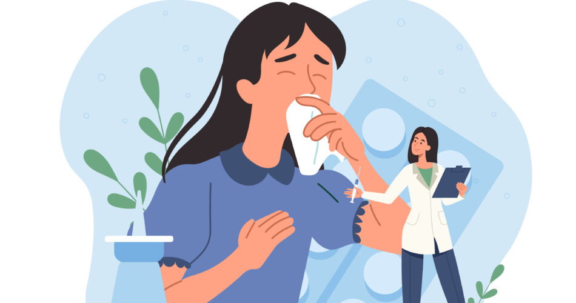
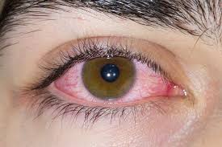

Paling Biasa
Alahan Makanan
Tindak balas imun terhadap protein makanan tertentu seperti kacang, makanan laut, dan susu.

Dermatologi
Alahan Kulit
Keadaan seperti Eczema dan Hives yang menyebabkan kegatalan dan keradangan pada kulit.

Pernafasan
Alahan Pernafasan
Alahan terhadap habuk, debunga atau kulat yang menjejaskan saluran pernafasan dan sinus.
Haiwan
Alahan Haiwan
Tindak balas terhadap protein dalam sel kulit haiwan, air liur atau air kencing kucing dan anjing.

Oftalmologi
Alahan Mata
Juga dikenali sebagai konjunktivitis alergi, menyebabkan mata merah, gatal dan berair.

Perubatan
Alahan Ubat
Tindak balas abnormal sistem imun terhadap ubat-ubatan tertentu seperti antibiotik.
🔍
Maaf, kategori alahan tidak dijumpai.
Cuba gunakan kata kunci yang lebih umum.